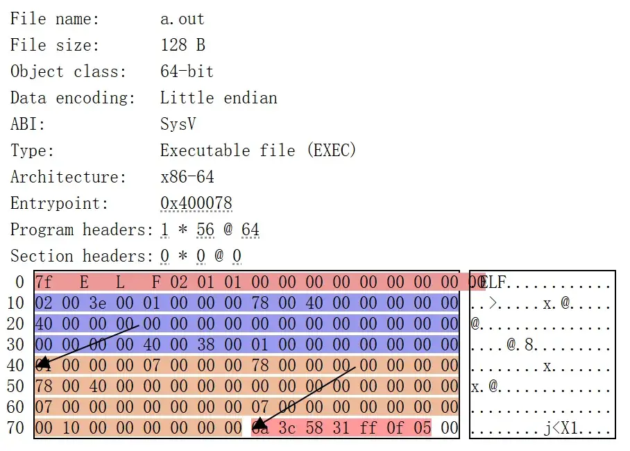

资源
正文
10 可执行文件
如果要实现一个 MicroPython 解释器，我们需要实现什么，又需要借助哪些系统调用？
实现 MicroPython 解释器需要以下核心组件和步骤：
核心实现部分：
- 词法分析（Lexer） 将源代码分割为 token，识别关键字、变量名、操作符等。
- 语法分析（Parser） 构建抽象语法树（AST），验证语法结构是否符合 Python 规范。
- 字节码生成（Compiler） 将 AST 转换为可执行的字节码（或直接解释执行）。
- 虚拟机（VM） 执行字节码，管理运行栈、作用域和内存。
- 内置类型与函数 实现 Python 基础类型（如
int,str,list）和内置模块（如sys,io）。- 内存管理 通过垃圾回收（GC）机制管理动态内存，通常采用标记-清除算法。
- 硬件抽象层（HAL） 针对嵌入式平台实现 GPIO、I2C 等外设驱动接口。
依赖的系统调用（以类 Unix 系统为例）：
- 内存管理
brk/sbrk：扩展堆内存（若使用动态内存分配）。mmap/munmap：映射内存页（用于大块内存或特殊设备）。- 文件操作
open/read/write：读写文件系统。ioctl：控制硬件设备（如终端 I/O）。- 进程与信号
fork/exec：支持多进程（若需扩展功能）。signal：处理中断信号（如Ctrl+C）。- 时间管理
gettimeofday/clock_gettime：获取系统时间。nanosleep：实现延时函数（如time.sleep()）。- 输入输出
select/poll：非阻塞 I/O 或多路复用（用于 REPL 交互）。嵌入式系统差异：
在无操作系统的微控制器上（如 STM32）：
- 直接操作寄存器或通过厂商 SDK 控制外设（如 GPIO）。
- 替换系统调用为裸机驱动（如自定义
_read()/_write()实现 UART 通信）。- 静态内存分配替代动态 GC（可选优化）。
工具链依赖：
- 交叉编译器（如 ARM-GCC）：生成目标平台二进制。
- 链接脚本：定义内存布局（代码/数据/堆栈分区）。
- 固件烧录工具（如 OpenOCD）：部署到硬件。
通过分层设计（如分离核心解释器与平台适配层），可提高跨平台兼容性。
10.1 可执行文件
什么是可执行文件？
学习操作系统前
- 那个 “双击可以弹出窗口的东西”
学习操作系统后
- 一个操作系统中的对象（文件）
- 一个字节序列（我们可以把它当字符串编辑 ）
- 一个描述了状态机初始状态的数据结构（打扰了）
文件对象
- 在操作系统看来，一切资源（文件、进程、设备等）都是“对象”。
- 可执行文件只是磁盘上的一种特殊文件，它包含了能让操作系统加载并执行的结构化数据。
字节序列
- 文件从本质上说就是一串字节。
- 用十六进制编辑器打开可执行文件，你能看到一堆 0x7F、0x45、0x4C、0x46……
- （比如 Linux 下的 ELF 文件，开头四个字节是魔数
0x7F 45 4C 46，即“ELF”）描述状态机初始状态的数据结构
- 程序运行时，本质上是一个**状态机（State Machine）**在不断变化： 它的寄存器、内存、堆栈、文件描述符都在不断变化。
- 可执行文件就是这个状态机的“初始状态描述”： 它告诉操作系统：
- 程序起始地址在哪里（
entry point）- 要把哪些数据放进内存（代码段、数据段）
- 启动时栈怎么初始化
- 动态库怎么链接
- 也就是说，可执行文件并不是“代码本身”，而是运行状态的一份“蓝图”。
ELF: Executable and Linkable Format
ELF 是 Linux/Unix 系统中最常见的可执行文件格式（Windows 用的是 PE，macOS 用的是 Mach-O）。
我们在《计算机系统基础》中学到的
- binutils 中的工具可以让我们查看其中的重要信息
- 《计算机系统基础》常备工具
- readelf & objdump
- binutils 里原来还有不少宝藏！
- 《计算机系统基础》常备工具
我们在《计算机系统基础》里没学到的
- 如果我们想了解关于 ELF 文件的信息，有什么不那么 “原始” 的现代工具可用？
- 哦，有
elfcat，以及更多
- 哦，有
elfcat 是一个 ELF 文件可视化工具，它可以把 ELF（Executable and Linkable Format）文件转换成 HTML 格式，便于浏览器中查看其内部结构（如 ELF 头、程序头、节区、段、符号表、字符串表等）
可执行文件：字节序列
创建 elf-minimal.py，用于生成一个极小的可执行文件：
import sys
# This is a minimal ELF executable file
hex_data = '''
457f 464c 0102 0001 0000 0000 0000 0000
0002 003e 0001 0000 0078 0040 0000 0000
0040 0000 0000 0000 0000 0000 0000 0000
0000 0000 0040 0038 0001 0000 0000 0000
0001 0000 0007 0000 0078 0000 0000 0000
0078 0040 0000 0000 0000 0000 0000 0000
0007 0000 0000 0000 0007 0000 0000 0000
1000 0000 0000 0000 3c6a 3158 0fff 0005
'''
res = b''.join(
bytes.fromhex(blk[2:] + blk[:2])
for blk in hex_data.split()
) # 把每个 16 位块的两个字节调换顺序
sys.stdout.buffer.write(res)输出的内容是 ELF 文件格式；
它可能会被命名成任意名字（如
a.out），但文件格式本质是 ELF。
python3 elf-minimal.py > a.out
chmod +x a.out
./a.out
elfcat a.out{kind=link}

0x0000 ┌──────────────────────────┐
│ ELF Header (64 bytes) │
0x0040 ├──────────────────────────┤
│ Program Header (56 bytes)│
0x0078 ├──────────────────────────┤
│ Code: "exit(0)" (7 bytes)│
0x007F └──────────────────────────┘
10.2 和 ELF 搏斗的每一年
反思
- ELF 不是一个人类友好的 “状态机数据结构描述”
- 为了性能，彻底违背了可读（“信息局部性”）原则
几乎让你直接去读一个内存里的二叉树
意思是 ELF 文件的结构不是线性的，而是充满了引用、偏移、索引等“指针式关系”。 解析 ELF 文件时，你经常需要：
- 读一个表（比如节表）
- 通过索引跳到别的地方（比如字符串表）
- 再跳回来
- 再解析符号表
- “Core dump”
- Segmentation fault (core dumped)
- (为什么叫 “core dump”？)
把程序出错时的内存快照保存下来，方便开发者事后调试。
- 地狱笑话：今天的 core dump 是个 ELF 文件
- “状态快照”——Everything is a state machine
你在调试 ELF 可执行文件时，崩溃了；
操作系统又生成了一个新的 ELF 文件（core dump）；
所以你要用 ELF 工具（如
readelf,objdump）去分析另一个 ELF 文件。
core dump = 状态快照
程序 = 状态机
既然提到 Core Dump 了
在不那么方便 gdb 的时候
ulimit -c unlimited（或者一个你认为合理的值）
这条命令的作用是设置 Linux 系统允许生成的 core dump 文件的最大大小。
Crash (SIGSEGV, SIGABRT, SIGILL, ...)时会做 core dump- 适合于 production systems
常见导致 core dump 的信号：
SIGSEGV：非法内存访问SIGABRT：abort()主动中止SIGILL：非法指令这些信号都是致命错误，触发 core dump 的典型原因。
但 gdb 竟然不允许我继续执行
- 明明状态里该有的都有啊 (内存 + 寄存器)
- 往回走呢？2018 年你还可以发一篇 OSDI 了
如果你真的能让程序“从 core dump 中复活”或“倒回去执行”，这在学术上是一篇很厉害的研究成果。
- 想要继续执行？可以用 CRIU
- 智能 Agent 时代，这玩意可好用了
core dump 是“只读的快照”，用于调试；
CRIU 是“可恢复的快照”，用于继续执行。
在智能体（Agent）或云端容器环境中，长时间运行的进程经常需要迁移、暂停、恢复。
CRIU 就非常有用，比如：
- 保存 AI agent 的运行上下文；
- 把运行中任务转移到别的节点；
- 快速恢复训练任务或推理服务。
但曾经并不是这样的
UNIX a.out “assembler output”
- 一个相对平坦的数据结构
struct exec {
uint32_t a_midmag; // Machine ID & Magic
uint32_t a_text; // Text segment size
uint32_t a_data; // Data segment size
uint32_t a_bss; // BSS segment size
uint32_t a_syms; // Symbol table size
uint32_t a_entry; // Entry point
uint32_t a_trsize; // Text reloc table size
uint32_t a_drsize; // Data reloc table size
};| 字段 | 含义 | 对应现代 ELF 概念 |
|---|---|---|
a_midmag | 机器架构 ID + 魔数（识别文件类型） | ELF Header 的 e_ident |
a_text | 代码段（text segment）大小 | Program Header 中的 .text |
a_data | 已初始化数据段（data segment）大小 | .data 段 |
a_bss | 未初始化数据段（bss segment）大小 | .bss 段 |
a_syms | 符号表大小 | .symtab |
a_entry | 程序入口地址 | e_entry |
a_trsize | 代码段重定位表大小 | .rela.text |
a_drsize | 数据段重定位表大小 | .rela.data |
- 功能太少（不支持动态链接、调试信息、内存对齐、thread-local……），自然被淘汰
换句话说
支持的特性越多，越不人类友好
- 听到 “程序头表”、“节头表”，大脑需要额外转译
- 含义隐晦的
R_X86_64_32,R_X86_64_PLT32 - 大量的 “指针”（人类无法阅读的偏移量）
- （我竟然已经被训练成基本可以正常阅读了）
- 卷王们在考试周经历了同样的魔鬼训练
- 这就是大学需要改变的地方
教育体系往往让学生去适应机器的逻辑；
而不是让机器更好地服务人类的理解方式。
人类友好的方式
- 越 “平坦”，越容易理解
- 所有需要的信息都立即可见
| 概念 | 说明 |
|---|---|
| “平坦” | 指的是 a.out 那种线性结构：header + text + data |
| “立即可见” | 不需要通过偏移跳转、索引查表，信息就在眼前 |
| “人类友好” | 直观、连续、可顺序阅读 |
10.3 Funny Little Executable
“自行设计” 能实现（静态）链接和加载的二进制文件格式，以及相应的编译器、链接器（复用 gcc/ld）和加载器。FLE 文件直接将一段可读、可写、可执行的位置无关代码连通数据映射到内存并跳转执行。
太硬核了……
[源代码] → (gcc -c) → .o 文件 → (自定义 linker) → .fle → (自定义 loader) → 运行！
代码 (🔢)、符号 (📤)、重定位 (❓)
凑齐这三要素，我们就可以完成链接到加载的全流程了！
🔢: ff ff ff ff ff ff ff
🔢: ff ff ff ff ff ff ff
📤: _start
🔢: 48 c7 c0 3c 00 00 00
🔢: 48 c7 c7 2a 00 00 00
^
|
This byte is return code (42).
🔢: 0f 05 ff ff ff ff ff
🔢: ff ff ff ff ff ff ff
❓: i32(unresolved_symbol - 0x4 - 📍)| 概念 | 内容 | 由谁生成 | 何时使用 | 比喻 |
|---|---|---|---|---|
| 🔢 代码 | 实际机器码和数据 | 编译器 | 运行时执行 | 信的正文 |
| 📤 符号 | 各段、函数、变量的命名信息 | 编译器 | 链接时解析、加载时查找入口 | “收件人姓名” |
| ❓ 重定位 | 地址待定的地方的修正表 | 编译器/汇编器 | 链接或加载时修改机器码 | 邮差把信上写的“XX同学”换成“上海市XX路123号”地址 |
这是一个 DSL（Domain-specific Language）
我们为什么需要 DSL？
- 只要领域内的表达能力
- 做了减法，就可以更专注
- 更简洁、更 natural
DSL 的例子
- 正则表达式
- Markdown, TeX, ...
- abcjs
| DSL | 解决的问题 |
|---|---|
| 正则表达式 | 匹配模式的表达 |
| Markdown | 文本结构的表达 |
| TeX | 排版结构的表达 |
| FLE | 二进制链接/加载逻辑的表达 |
实现 FLE Binutils
实现的工具集
- objdump/readfle/nm (显示)
- cc/as (编译)
- ld (链接)
大部分都复用自 GNU binutils
- elf_to_fle
生成可执行文件
1-预编译 & 编译
源代码 (.c) → 源代码 (.i)
- Ctrl-C & Ctrl-V (#include)
- 字符串替换
- 今天：我们有过程宏
预处理阶段：
- 处理
#include、宏定义、条件编译等。- 输出的
.i文件是 展开了所有宏和头文件 的纯 C 代码。- 比喻：就像把一篇文章里的引用、脚注都展开成正文。
源代码 (.i) → 汇编代码 (.s)
- “高级状态机” 到 “低级状态机” 的翻译
- 最终生成带标注的指令序列
编译阶段：
- 编译器把高阶语言（状态机/逻辑）翻译成低阶汇编（机器码指令序列）。
- 输出
.s文件就是 带符号标注的汇编代码。- 比喻：把故事翻译成舞台剧的脚本，每一行都标注动作和位置。
2-汇编
汇编代码 (.s) → 目标文件 (.o)
- 文件 = sections (.text, .data, .rodata.str.1, ...)
- 对于 ELF，每个 section 有它的权限、内存对齐等信息
Section 就像一个文件夹，把相同类型的数据放在一起，方便链接器和加载器管理。
- section 中的三要素
- 代码（字节序列）
- 符号：标记 “当前” 的位置
- 重定位：暂时不能确定的数值 (链接时确定)
- Quick Quiz: ELF 中全局和局部符号有什么区别？还有其他类型的符号吗？
汇编器把
.s转换成目标文件.o（object file）目标文件结构：
- Sections：
.text、.data、.rodata、.bss等 每个 section 都有权限（读/写/执行）和内存对齐信息- 三要素：
- 代码（🔢）：每条指令对应的字节序列
- 符号（📤）：标记每个函数、全局变量的位置
- 重定位（❓）：对还未确定地址的符号占位，待链接时解析
Section 代码 (🔢) 符号 (📤) 重定位 (❓) .text ✅ 指令字节 ✅ 函数名符号 ✅ call/jmp 目标 .data ✅ 初值字节 ✅ 变量名符号 ✅ 指针/数组地址 .rodata ✅ 常量字节 ✅ 常量名符号 ❌ 一般不需要 .bss ❌ 没有实际字节 ✅ 变量符号 ❌ 变量地址待分配
3-（静态）链接
多个目标文件 (.o) → 可执行文件 (a.out)
- 合并所有的 sections
- 分别合并 .text, .data, .bss 中的代码
- 把 sections “平铺” 成字节序列
- 确定所有符号的位置
- 解析全部重定位
- 得到一个可执行文件
- （程序初始内存状态的描述）
链接器做的事情：
- 合并 Sections：
- 分别把所有
.text、.data、.bss平铺成连续字节序列- 确定符号地址：
- 根据 section 在内存的起始位置，为每个符号分配最终地址
- 解析重定位：
- 修改所有引用未定地址的指令/数据，使其指向最终符号地址
- 生成可执行文件：
- 包含代码、数据、符号表、入口点等，描述程序初始内存状态
4-加载
把“字节序列”搬到内存，并设置入口点。
10.4 操作系统和加载器
加载器是内核实现的一部分
execve(path, argv, envp)
-
操作系统内核解析 path、完成加载
-
-
可以在源码里找到手册（System V ABI）中的概念
-
argc, argv, envp:C if (put_user(argc, sp++)) return -EFAULT;
-
-
关键字搜索：PT_LOAD
-
有代码的地方就有 bug: CVE-2024-46826
-
execve是 Linux/UNIX 系统调用，用于执行一个新程序。内核做的事情：
- 解析 path：找到可执行文件（ELF/FLE 等）
- 读取 ELF 文件：解析 header、program header、section
- 分配内存：给各段（.text/.data/.bss）分配虚拟内存
- 映射到内存：把文件内容搬入内存
- 设置权限：代码段可执行、数据段可读写等
- 设置入口：CPU PC 指向 ELF header 指定的 entry point
- 初始化栈：设置
argc, argv, envp
运行程序的两个方法
/bin/ls（ELF）：内核识别 ELF，loader 按 PT_LOAD 映射段并直接跳转到入口；
./a.py（脚本文本）：若文件有#!interpreter并且可执行，内核会把执行委托给解释器（相当于execve(interpreter, [interpreter, opt?, script, ...], envp)）；若没有 shebang，
execve会失败（ENOEXEC），但交互式 shell 可能会做兼容性回退（以/bin/sh执行）。
execve本身不会创建新进程；参数、环境由调用方提供，内核负责把它们放到新程序的栈上并交给新映像。当内核在
execve(path, ...)里发现文件头以#!开头时，它不是直接执行那个文本文件，而是把它当成要交给某个解释器去执行——内核会把解释器当作要execve的目标程序，并将脚本路径作为解释器的参数传入。